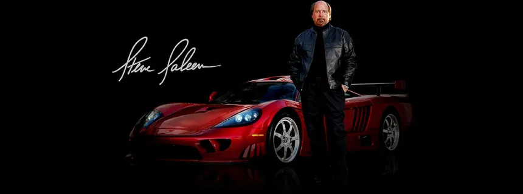

Saleen
Steve Saleen
The man behind Saleen Automotive

Stephen M. “Steve” Saleen is the founder and CEO of Saleen Automotive, which he launched in Southern California in 1984 with a clear mission: bring race-proven performance to street cars. Raised amid the region’s storied car culture, he cut his teeth as a racer—winning his first Shelby Mustang race in 1973 before conquering the Pacific Coast Formula Atlantic Championship and ultimately piloting an Indy car.
Stephen M. "Steve" Saleen
His entrepreneurial vision pioneered a new industry: specialty design, engineering, manufacturing, and nationwide showroom sales of high-performance vehicles. Saleen’s factory teams—often featuring Steve himself behind the wheel—captured numerous national titles, including the 1987 World Challenge and the 1992 SCCA Truck Championship. By forging unprecedented vendor collaborations, he seamlessly translated championship-grade parts into street-legal packages.
Globally recognized for his expertise in bespoke vehicle production, certification processes, and scalable customization, Saleen caught Ford’s attention in 2002. He was tapped to engineer, develop, and assemble the legendary Ford GT40. From its humble beginnings, Saleen Automotive has grown into a network of manufacturing plants and distribution centers across North America. Landmark models—from the Saleen Mustang S281 and S351 to the world-class Saleen S7 supercar—have proven victorious on premier circuits from Daytona and Le Mans to Silverstone, Monza, and the Nürburgring.
Beyond his own marque, Steve’s team has contributed to the Dodge Viper’s paint and sub-assembly, created a supercharged Harley-Davidson Ford F-150, and built the first running Camaro for the “Transformers” film. Saleen vehicles have also starred in “Fast & Furious,” “Bruce Almighty,” “Transformers” (as Barricade), and “Iron Man.” Most recently, he launched the Saleen 1—a mid-engine sports car with unmistakable supercar credentials. As featured on the History Channel, Steve Saleen stands alongside Enzo Ferrari and Ferdinand Porsche as one of the few “legendary” performance car builders.
A USC business graduate, Steve lives in Southern California with his wife Liz, their three children, and seven grandchildren.
You just do it. You always say to yourself, 'Well, how hard can that be?'
Steve Saleen

Back